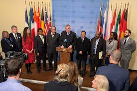
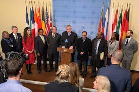

Halo Semua, perkenalkan nama saya Casey Rae Limas biasanya dipanggil Casey, pada web ini saya akan menjelaskan mengenai kerja sama international, peran Indonesia dalam kerja sama tersebut, dampak kerja sama tersebut kepada Indonesia, serta SDGs.